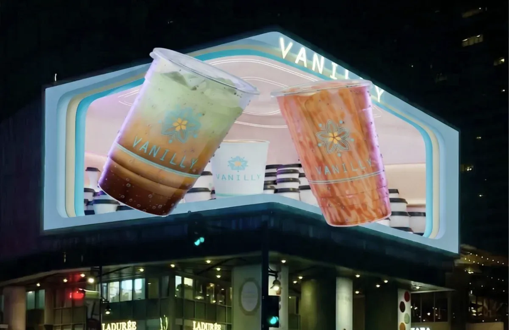
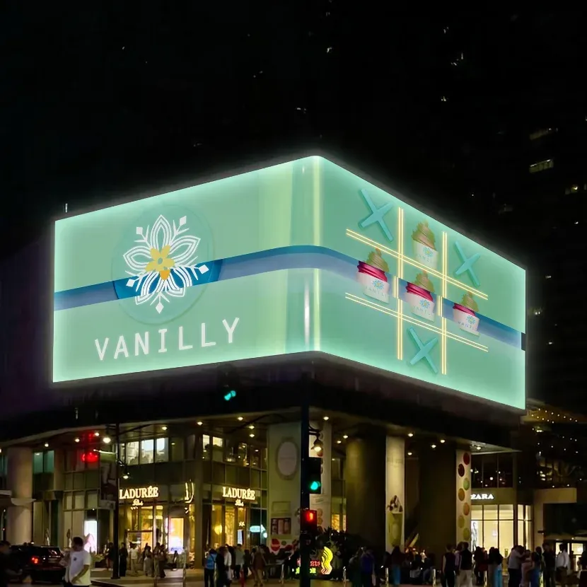
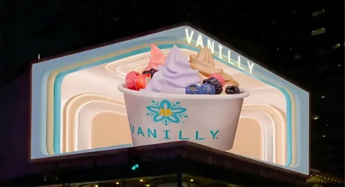
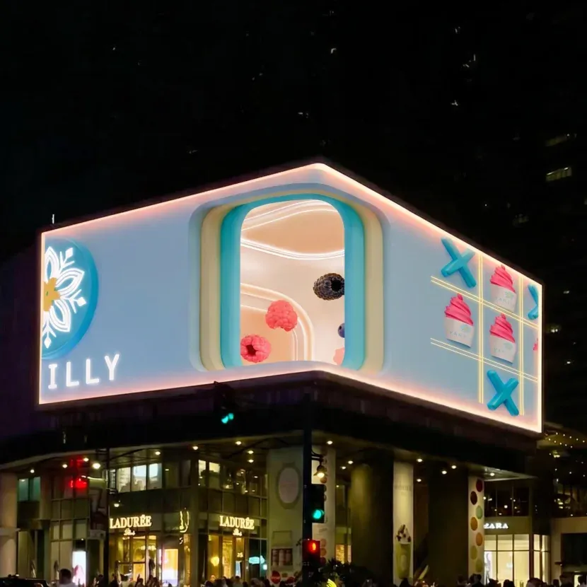
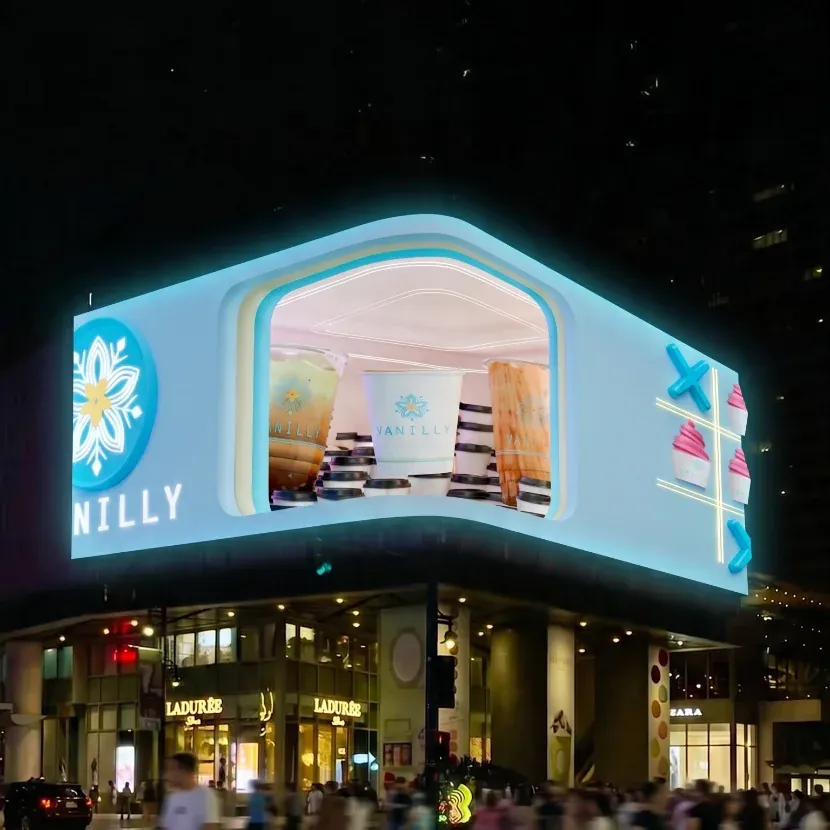

01 · Anamorphic · VANILLYأنامورفيك · فانيلي
Products that lift out of a corner screenمنتجات تخرج من شاشة على زاوية مبنى
Forced-perspective 3D content for VANILLY on a curved LED billboard — the product appears to lift out of the screen and over the street.محتوى ثلاثي الأبعاد بمنظور قسري لفانيلي على شاشة LED منحنية — المنتج يبدو خارجاً من الشاشة فوق الشارع.

The processخطوات العمل
-
01
A frame in the brand’s coloursإطار بألوان العلامة
The screen is built as a deep 3D box in VANILLY’s colours, with the logo on the front and a tic-tac-toe board on the side.بُنيت الشاشة كصندوق ثلاثي الأبعاد عميق بألوان فانيلي، الشعار على الواجهة ولعبة إكس-أو على الجانب.

-
02
Products that break the frameمنتجات تتجاوز الإطار
Drinks and a frozen-yogurt cup push past the edge of the screen. The forced perspective makes them look as if they hang over the street.المشروبات وكوب الفروزن يوغرت تتجاوز حافة الشاشة، والمنظور القسري يجعلها تبدو معلّقة فوق الشارع.

-
03
Movement and playحركة ولعب
Berries fall through an opening in the frame, and the tic-tac-toe game is played with VANILLY cups.حبات التوت تسقط من فتحة في الإطار، ولعبة إكس-أو تُلعب بأكواب فانيلي.

-
04
Seen from the streetمن مستوى الشارع
Each scene is shown on the corner building at street level — the view the illusion is built for.كل مشهد معروض على المبنى من مستوى الشارع، وهي الزاوية التي صُمّم الخداع البصري ليعمل منها.

Let's build the shot.لنصنع المشهد.
Have a project in mind? Send the details by email or WhatsApp.لديك مشروع؟ أرسل التفاصيل عبر البريد أو واتساب.